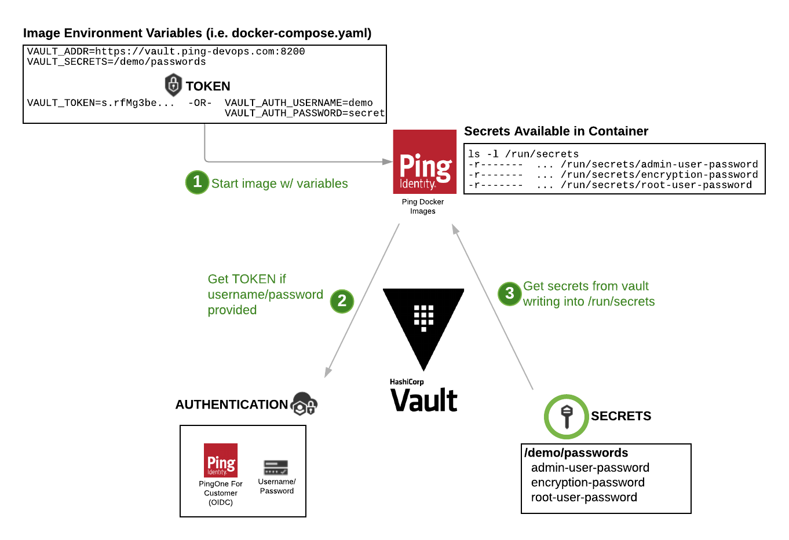

Using Hashicorp Vault ¶
This documentation provides details for using Hashicorp Vault and secrets with Ping Identity DevOps Images.
What You'll Do ¶
The examples below will explain and show examples of:
- Using HashiCorp Vault Secrets in native PingIdentity DevOps Images
- Using HashiCorp Vault Injector in kubernetes deployments
Prerequisites ¶
- You've already been through Get Started to set up your DevOps environment and run a test deployment of the products.
- Have a running Hashicorp Vault instance. Refer to Deploy Hashicorp Vault for information on deploying a vault if you need one.
Kubernetes - HashiCorp Vault Injector ¶
If you are using Kubernetes to deploy your containers, it's highly recommended to use the HashiCorp Vault Injector. The section below provides details on how to use secrets in a non-kubernetes deployment (i.e. docker-compose).
If the HashiCorp Vault Injector Agent is installed, annotations can be added to the .yaml file of a
Pod, Deployment, StatefulSet resource to pull in the secrets. The snippet below provides an example set
of annotations (placed in to the metadata of the container) to pull in a pf.jwk secret into a container.
Helm Chart Stateful Set
This is an StatefulSet example created using the PingIdentity DevOps Helm Chart.
apiVersion: apps/v1
kind: StatefulSet
spec:
template:
metadata:
annotations:
vault.hashicorp.com/agent-init-first: "true"
vault.hashicorp.com/agent-inject: "true"
vault.hashicorp.com/agent-inject-secret-devops-secret.env.json: secret/.../devops-secret.env
vault.hashicorp.com/agent-inject-template-devops-secret.env.json: |
{{ with secret "secret/.../devops-secret.env" -}}
{{ .Data.data | toJSONPretty }}
{{- end }}
vault.hashicorp.com/agent-inject-secret-devops-secret.env.json: secret/.../passwords
vault.hashicorp.com/agent-inject-template-passwords.json: |
{{ with secret "secret/.../passwords" -}}
{{ .Data.data | toJSONPretty }}
{{- end }}
vault.hashicorp.com/agent-pre-populate-only: "true"
vault.hashicorp.com/log-level: info
vault.hashicorp.com/preserve-secret-case: "true"
vault.hashicorp.com/role: k8s-default
vault.hashicorp.com/secret-volume-path: /run/secrets
Secrets - Variables ¶
Using example above, the value for secret secret/.../devops-secret.env json will be pulled into the container
as /run/secrets/devops-secret.env.json. Because this secret ends in the value of .env, it will further be turned into a property file
with NAME=VALUE pairs, and available to the container environment when starting up.
Example of devops-secret.env transformed into files
{
"PING_IDENTITY_DEVOPS_USER": "jsmith@example.com",
"PING_IDENTITY_DEVOPS_KEY": "xxxxx-xxxx-xxxxx-xxxxx-xxxx"
}
File: /run/secrets/devops-secret.env
Contents: PING_IDENTITY_DEVOPS_USER="jsmith@example.com"
PING_IDENTITY_DEVOPS_KEY="xxxxx-xxxx-xxxxx-xxxxx-xxxx"
Secret - Files ¶
Using example above, the value for secret secret/.../passwords json will be pulled into the container as /run/secrets/passwords.json and for every key/value
in that secret a file will be created with the name of the key and contents of value.
Example of /run/secrets/passwords.json transformed into files
{
"root-user-password": "secret-root-password",
"admin-password": "secret-admin-password"
}
File: /run/secrets/secret-root-password
Contents: secret-root-password
File: /run/secrets/secret-admin-password
Contents: secret-admin-password
Native DevOps HashiCorp Support ¶
Vault secrets can also be used in native PingIdentity DevOps Images regardless of the environment they are deployed in (i.e. kubernetes, docker, docker-compose). In these cases, there is no injector agent required.
This does require some type of AuthN to your vault (i.e. USERNAME/PASSWORD or TOKEN). HashiCorp Injector method is recommended.
The image below depicts the components and steps for pulling secrets into a container at start-up.

The following variables can be used to deploy images that will pull secrets from the Vault.
| Variable | Example | Description |
|---|---|---|
| SECRETS_DIR | /run/secrets | Location for storing secrets. See section below on using a tmpfs mounted filesystem to store secrets in a memory location. |
| VAULT_TYPE | hashicorp | Type of vault used. Currently supporting hashicorp. |
| VAULT_ADDR | https://vault.example.com:8200 | URL for the vault with secrets |
| VAULT_TOKEN | s.gvC3vd5aFz......JovV0b0A | Active token used to authticate/authorize container to vault. Optional if VAULT_AUTH_USERNAME/VAULT_AUTH_PASSWORD are provided. |
| VAULT_AUTH_USERNAME | demo | Username of internal vault identity. Optional if VAULT_TOKEN is provided. |
| VAULT_AUTH_PASSWORD | 2FederateM0re | Password of internal vault identity. Optional if VAULT_TOKEN is provided. |
| VAULT_SECRETS | /pingfederate/encryption-keys | A list of secrets to pull into the container. Must be the full secret path used in vault. |
Below is an example of how these would be used in an docker-compose.yaml file. Note that this example provides 2 secrets as denoted by the VAULT_SECRETS setting.
services:
pingfederate:
image: pingidentity/pingfederate:edge
environment:
...
################################################
# Vault Info
################################################
- VAULT_TYPE=hashicorp
- VAULT_ADDR=https://vault.ping-devops.com:8200
- VAULT_AUTH_USERNAME=demo
- VAULT_AUTH_PASSWORD=2FederateM0re
- VAULT_SECRETS=/demo/passwords
/demo/getting-started/pingfederated/pf-keys
The secret types (Variables/Files) are processed the same way as with the HashiCorp Injector Method above.
Secrets - Base64 ¶
Often, there are secrets that may be of a binary format (i.e. certificates). Special key name suffixes can be used to perform certain processing on the keys when the file is created. The following table provides examples of how keys with special suffixes.
| Key Suffix | Description |
|---|---|
| .b64 or .base64 | Specifies that the value is base64 encoded and the resulting file should be decoded when written, without the suffix. |
There is a message that is base64 encoded and stored in the vault as secret /demo/b64-demo and key hello.b64
Secret: /demo/b64-demo
KEY VALUE
--- -----
hello.b64 SGVsbG8gV29ybGQhCg==
would result in the following file:
/run/secrets/hello
CONTENTS
--------
Hello World!
Using tmpfs for Secrets ¶
It is best practice to place secrets in a volume that won't be persisted to storage with the possibility that it might be improperly accessed at any point in the future (i.e. backups, environment variables).
Kubernetes automatically provides the default SECRETS_DIR of /run/secrets for this.
If using docker, it's recommended to create a tmpfs type volume and size it to 32m and mount it to a path of /run/secrets.
Requires docker-compose version 2.4 or later, due to the options provided to the tmpfs volumes definition.
Creates a /run/secrets volume under tmpfs
version: "2.4"
services:
pingfederate:
image: pingidentity/pingfederate:edge
environment:
...
tmpfs: /run/secrets
---- or -----
volumes:
- type: tmpfs
target: /run/secrets
tmpfs:
size: 32m
See this mount by exec'ing into the container and running:
> df -k /run/secrets
Filesystem 1K-blocks Used Available Use% Mounted on
tmpfs 16384 0 16384 0% /run/secrets